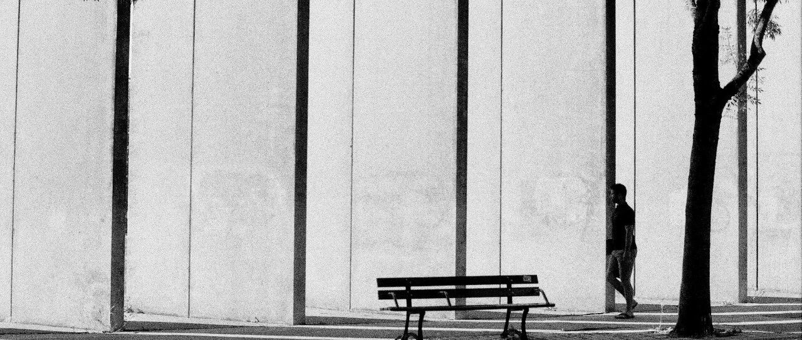

无题
昨天写到凌晨三点，被妈妈骂小孩的声音吵醒，我的日语刚学一个月，还比较菜鸡，仅够日常生活最基本的交流用。
所以能听懂的，对方身份不是很明显吗？是有打算好好学下日语，后续可能会在东京有一些业务。
还有说到隔音效果的。这个可能是三个方面的原因:
一个是女性暴怒情况下，声音比较尖锐；一个是我睡眠很浅，平时在家户外的一丁点鸟叫虫鸣声都能把我吵醒；
另一个是日本的建筑结构问题，由于抗震需要，墙体之间有填充物。因此隔音方面确实不比国内全是水泥砂浆的厚墙体？这点我不太懂，交给专业的人士解读吧。
还有问日元大幅度贬值，影响怎么样的？京都的朋友说影响整体比较小，没有媒体说的那么夸张。
至于外来的游客，整体肯定是更划算的；我没有去计算过，问了下我媳妇，她说过来这几天，因为没有卡预算，都是随性而为，所以花销方面，会比在国内一线城市旅行略多一些。
大头的支出，主要是带娃去环球影城等游乐园，比如买七项快速通道，人均约1850元人民币；其次是包车，2500元人民币/天（日本的高速费用也不便宜）。
至于吃吃喝喝，我没算过花销。不过日本这边的消费，吃喝+住+出行，也是日本百姓日常支出的大头。
至于衣服啥的，都挺便宜的，这些花销基本上可以忽略不计。
问了下朋友，车的价格，同等配置下，价格大概是国内的三分一出头。有的价差更大，比如阿尔法，日本售价二十多万人民币，顶配的大概四十多万人民币。
主要还是税的区别，日本买车税低，国内进口的汽车关税等税负高。
今天参观了两家大企业，分别是京瓷和新日本制铁。
在参观新日本制铁时，再次感叹改革开放总设计师眼光的前瞻性，“科技是第一生产力”，他老人家当年在参观新日本制铁后，果断选择了要科技，因此才有了我们国内的宝钢。
日本的企业员工，如果不是自己选择跳槽，正常情况下就是在一家企业工作到退休。
他们没有中年失业的忧虑，但劣势是基本上在一个公司一入职，就干到退休，职业前景和生活平静得一眼能看到头，波澜不惊。
日本的企业不喜欢员工频繁跳槽，会将个人的主动频繁跳槽视为不诚信的行为，除非是猎头替企业来主动挖人。
一个人在A公司做了20年，主动跳槽到B公司，那他就是B公司里的新人，待遇上可能还不如在B公司只做了三年的人，因为这位在B公司三年的人，是前者的前辈。
企业人员的流动性很小，稳定是就业的最大特征。
日本的朋友说，他们这里有很多的百年企业、百年老店，可能规模很小，但很稳定、命长。
以前日本也是储蓄大国，后来频繁的自然灾害和消费习惯的改变，让日本变成了消费大国:
一是扣除日常生活开支后，确实也没剩多少钱；二是地震等自然灾害频繁，人随时可能没了，因此活在当下，即时享受。
我问他，不存钱，以后养老怎么办？
他笑了笑，一是退休时年纪已经大了；二是工作终身制下，从企业退休时，能领到一笔巨额退职金，一般情况下不必担心养老问题。
也是，现代化并不是简单看表面繁华、高楼林立，而是民生有保障，食品安全，病能医，老有养，生活幸福。
我们还有很长的路要走。
其实听完这些，我也挺感慨的，想过对几个副业公司做调整的，做小而美的利润型企业，让员工们安心稳定工作，给他们做好福利保障。
但目前也只敢想想，因为不知道自己的几个企业，能不能活到员工们老了退休。
今天的行程大概就是这些。
ps:先苟着写这么多，看反应，再决定后面是否继续写。现在这种写外面情况的，太容易招脑残和脑瘫了……
时差原因，东京时间比国内早了一个小时。因此这篇写完直接设置了系统定时发文，我睡觉去了，明早再来翻留言。大家都早点睡吧，晚安。